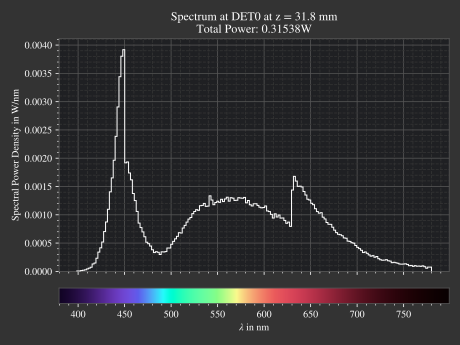
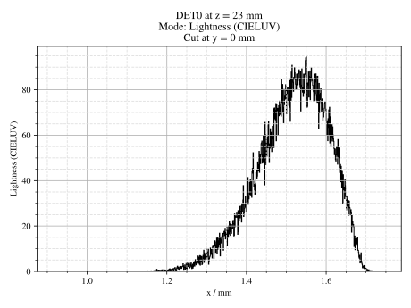
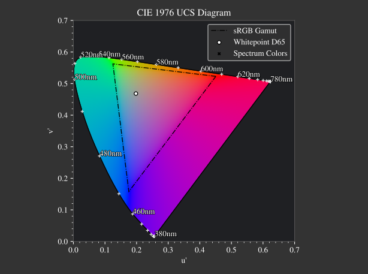
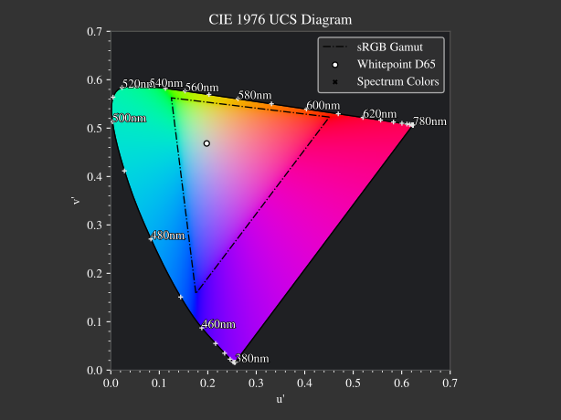
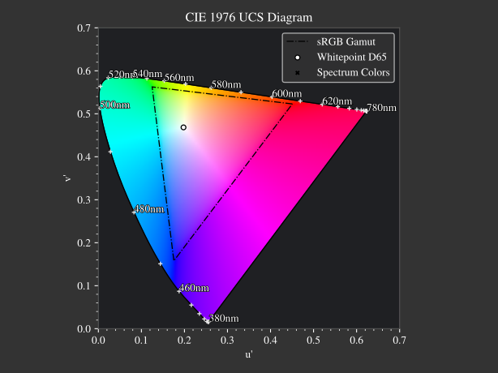
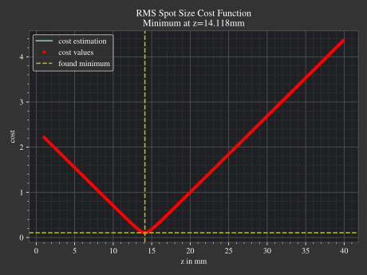
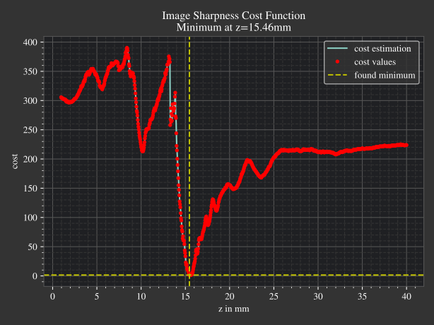

4.12. Plotting Functions#
4.12.1. Namespace#
The module optrace.plots includes multiple plot and visualization functionality.
You can import it in the following way:
import optrace.plots as otp
4.12.2. Parameters#
Most methods include a title argument for a user defined plot title.
otp.any_plotting_function(..., title="Name of plot")
Legends and labels inside the figures are generated from descriptions of the objects.
Make sure to create your objects with an expressive desc=".." or long_desc="..." parameter.
obj = Object(..., desc="Abc378")
obj2 = Object(..., long_desc="Some long description")
otp.any_plotting_function([obj, obj2], ...)
Plotting is implemented with matplotlib, so settings like size and dpi can be set globally
with the matplotlib.rcParams:
import matplotlib
matplotlib.rcParams["figure.figsize"] = (5, 5)
matplotlib.rcParams["figure.dpi"] = 100
4.12.3. Block/Pause Plots#
By default the plots are displayed and program continues executing.
Call optrace.plots.block to pause and interact with the plot windows.
import optrace.plots as otp
# do some plotting
...
# make blocking
otp.block()
4.12.4. Saving Figures#
Plots will be saved by specifying the path parameter.
This inhibits the display of the plot window and stores it instead in the provided location.
The file path is determined automatically from the filename.
Note that files are overwritten and not saved if the path is invalid.
otp.any_plotting_function(..., path="./results/image.jpeg")
Additional saving parameters are specified using a dictionary called sargs
that can include parameters from matplotlib.pyplot.savefig.
otp.any_plotting_function(..., path="./results/image.jpeg", sargs=dict(dpi=150, pad_inches=0, transparent=True))
4.12.5. Plotting Surfaces#
surface_profile_plot
allows for the plotting of one or multiple surfaces. It takes a Surface or a list of Surfaces as argument
as well as some other display options. The profiles are created in x-direction through the center y-coordinate.
Rotate the objects beforehand to slice through a different axis.
The surface profiles are plotted with absolute coordinates, if you want to display them relative
to each other provide remove_offset=True.
In the following example both cornea surfaces of the Arizona eye model are plotted:
import optrace as ot
import optrace.plots as otp
G = ot.presets.geometry.arizona_eye()
L0 = G.lenses[0]
otp.surface_profile_plot([L0.front, L0.back], remove_offset=True)
Provide values for x0 and xe to plot only a part of the profile.
otp.surface_profile_plot([L0.front, L0.back], remove_offset=True, x0=-0.5, xe=1.2, title="Cornea Surfaces")
This produces the following plot:

Fig. 4.60 Surface profile plot for the two cornea surfaces of the arizona eye model.#
4.12.6. Spectrum Plotting#
A Spectrum,
LightSpectrum
or TransmissionSpectrum
is plotted with the function spectrum_plot.
It takes a single object or a list as arguments.
import optrace.plots as otp
otp.spectrum_plot(ot.presets.light_spectrum.standard_natural)
The user can provide a user-defined title, turn off/on labels
and the legend with legend_off, labels_off.
ot.plots.spectrum_plot(ot.presets.light_spectrum.standard_natural, labels_off=False,
title="CIE Standard Illuminants", legend_off=False)
The following figures demonstrate examples for spectral plots.

Fig. 4.61 CIE standard illuminants LED series.# |
 Fig. 4.62 A rendered histogram spectrum.# |
{kind=link}
4.12.7. Plotting Images#
Image
The image_plot plotting function takes an
RGBImage or
ScalarImage as parameter.
A RenderImage
needs to be converted to a specific image type first.
img = ot.presets.image.hong_kong([2, 2])
otp.image_plot(img)
We can use
The additional parameter log is used to scale the image values logarithmically.
Provide flip=True to rotate the image by 180 degrees around the optical axis.
This is useful when the desired image is flipped due to the system’s imaging.
otp.image_plot(img, title="Title 123", log=True, flip=True)
Image Cut
For plotting an image profile the analogous function
image_profile_plot is applied.
It additionally requires a profile parameter x or y that specifies the profile coordinate.
otp.image_profile_plot(img, x=0)
Supporting all the same parameters as for image_plot,
the following call is possible:
otp.image_profile_plot(img, y=0.2, title="Title 123", log=True, flip=True)

|
 |
{kind=link}
4.12.8. Chromaticity Plots#
Usage
Chromaticity plots allow for a representation of image or spectrum colors inside a chromaticity diagram.
Both the chromaticities_cie_1931
or chromaticities_cie_1976 function are available,
depending on your choice of diagram.
It supports the plotting of RenderImage,
RGBImage
and LightSpectrum.
Example code for a RenderImage:
dimg = RT.detector_image()
otp.chromaticities_cie_1931(dimg)
Passing an RGBImage:
img = ot.presets.image.color_checker([3, 2])
otp.chromaticities_cie_1931(img)
A LightSpectrum can also be provided:
spec = ot.presets.light_spectrum.led_b1
otp.chromaticities_cie_1976(spec)
Or a list of multiple spectra:
specs = [ot.presets.light_spectrum.led_b3, ot.presets.light_spectrum.d65]
otp.chromaticities_cie_1976(specs)
norm specifies the brightness normalization, explained a few paragraphs below:
otp.chromaticities_cie_1976(ot.presets.light_spectrum.standard, title="Standard Illuminants", norm="Largest")

|

|
Norms
Chromaticity norms describe the brightness normalization for the colored diagram background.
Sum |
Normalize the sRGB values so the channel sum equals one. Leads to a diagram with smooth color changes and approximately equal brightness. |
Euclidean |
Root-mean-square value of linear sRGB channels. A good compromise between “Largest” and “Sum”, having more saturated colors than “Sum”, but also smooth color changes compared to “Largest”. The default option. |
Largest |
Maximum brightness for each sRGB color. Leads to colors with maximum brightness and saturation. |
 |
 |
 |
{kind=link}
{kind=link}
{kind=link}
4.12.9. Plotting Refractive Indices#
Index Plot
A RefractionIndex or a list of those objects
can be plotted with the function refraction_index_plot
from optrace.plots. The example below displays all glass presets in one figure.
import optrace.plots as otp
otp.refraction_index_plot(ot.presets.refraction_index.glasses)
Enable or disable the legend and labels with legend_off and labels_off
otp.refraction_index_plot(ot.presets.refraction_index.glasses, title="Test abc",
legend_off=False, labels_off=True)

Fig. 4.63 Example of a Refractive Index Plot.#
Abbe Plot
An Abbe plot is generated with abbe_plot.
otp.abbe_plot(ot.presets.refraction_index.glasses)
You can provide user defined spectral lines to calculate the index and V-number at:
otp.abbe_plot(ot.presets.refraction_index.glasses, title="abc", lines=ot.presets.spectral_lines.FeC)

Fig. 4.64 Example of an Abbe Plot.#
4.12.10. Focus Search Cost Function Plots#
Cost plots are used to debug the focus search and assess how pronounced a focus or focus region is.
Plotting the cost function and result is done by calling the
focus_search_cost_plot method from optrace.plots.
It requires the res, fsdict results from the
focus_search function.
from optrace.plots import focus_search_cost_plot
focus_search_cost_plot(res, fsdict)
Below you can find examples for two cost function plots.
 Fig. 4.65 Focus search for mode “RMS Spot Size” in the Spherical Aberration example.# |
 Fig. 4.66 Focus search for mode “Image Sharpness” in the Spherical Aberration example.# |
{kind=link}
{kind=link}
When calling from the TraceGUI,
it also outputs focus information inside the GUI:
Found 3D position: [5.684185e-06mm, 2.022295e-06mm, 15.39223mm]
Search Region: z = [0.9578644mm, 40mm]
Method: Irradiance Maximum
Used 200000 Rays for Autofocus
Ignoring Filters and Apertures
OptimizeResult:
message: CONVERGENCE: REL_REDUCTION_OF_F_<=_FACTR*EPSMCH
success: True
status: 0
fun: 0.019262979304881897
x: 15.3922327445026
nit: 4
jac: [ 9.024e-03]
nfev: 102
njev: 51
hess_inv: <1x1 LbfgsInvHessProduct with dtype=float64>